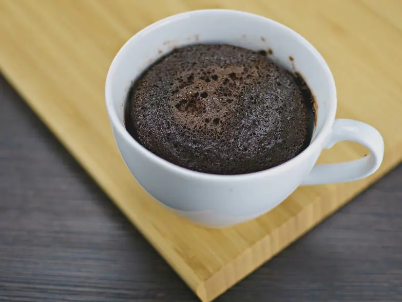

Фото: Mimschka, CC BY-SA 4.0

Шоколадный кекс в кружке в микроволновке
Шоколадный кекс в кружке за 5 минут в микроволновке
7 мин2 порц.506 ккал на порциюБ 15 · Ж 24 · У 57Интернациональная кухня
Продукты на 2 порц.
- Мука пшеничная5 ст. л.
- Сахар2,5 ст. л.
- Какао-порошок2 ст. л.
- Яйцо куриное2 шт
- Молоко5 ст. л.
- Растительное масло3 ст. л.
- Разрыхлитель1 ч. л.
- Соль1 щеп.
- Шоколад тёмный по желанию20 г
Как готовить
- Смешайте муку, сахар, какао, разрыхлитель и соль прямо в миске или сразу в двух больших кружках по 300 мл.
- Добавьте яйца, молоко и масло, перемешайте вилкой до гладкости без комков.
- Разлейте тесто по кружкам, заполнив их не больше чем наполовину: кекс сильно поднимется. По желанию утопите в тесто кусочек шоколада.
- Готовьте каждую кружку отдельно в микроволновке на мощности 800 Вт 1,5-2 минуты.
- Кекс готов, когда верх упругий и сухой. Немного влажная середина - это нормально.
- Дайте постоять 1 минуту и ешьте тёплым.
Совет. Лишние 30 секунд в микроволновке делают кекс резиновым. Лучше вынуть чуть раньше и дать дойти в кружке.